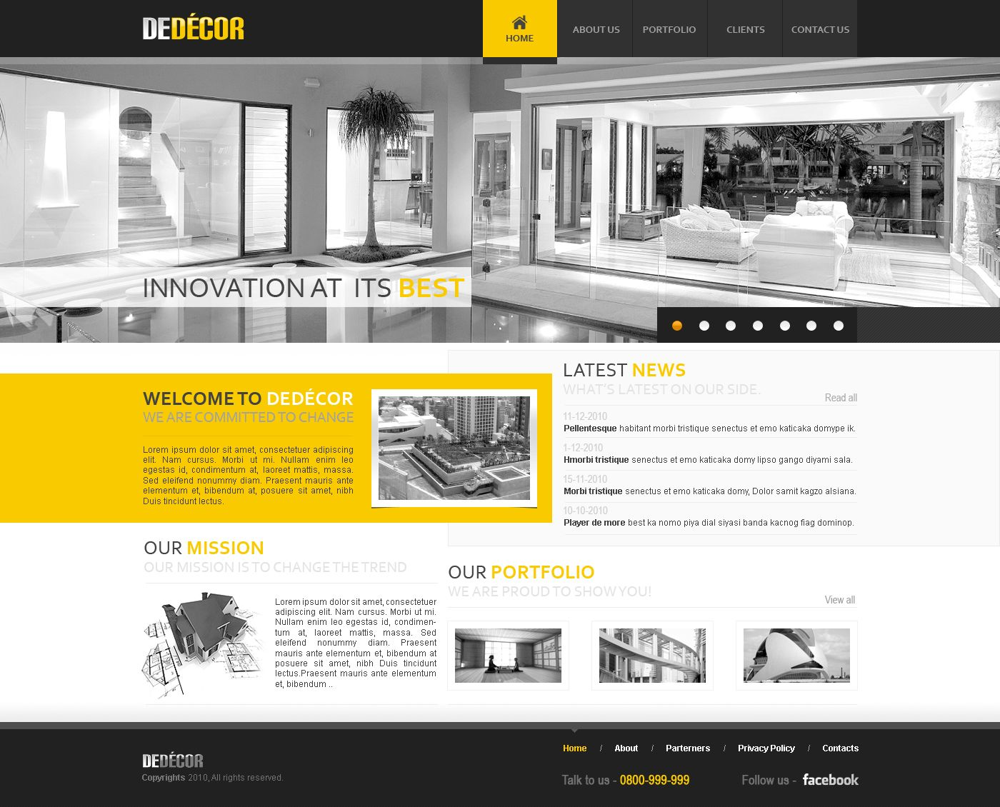
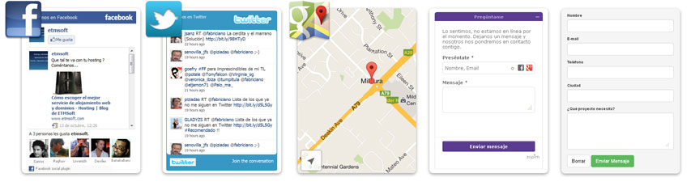
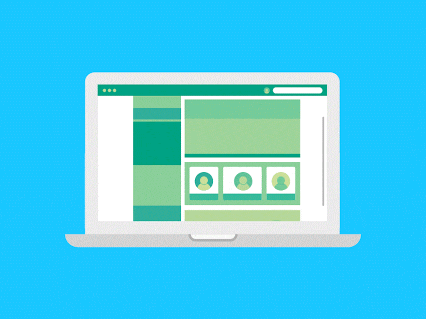
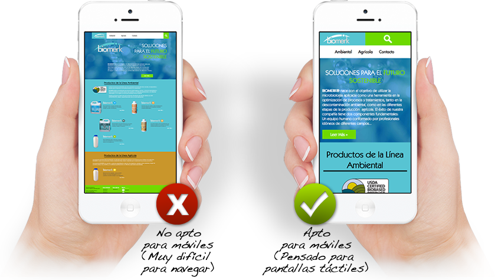
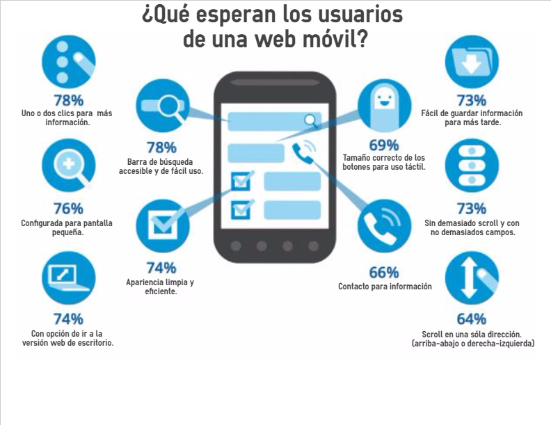
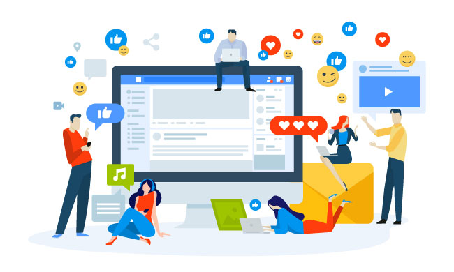
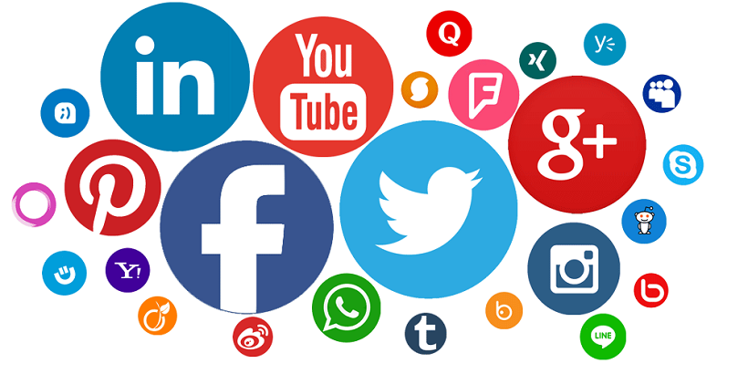
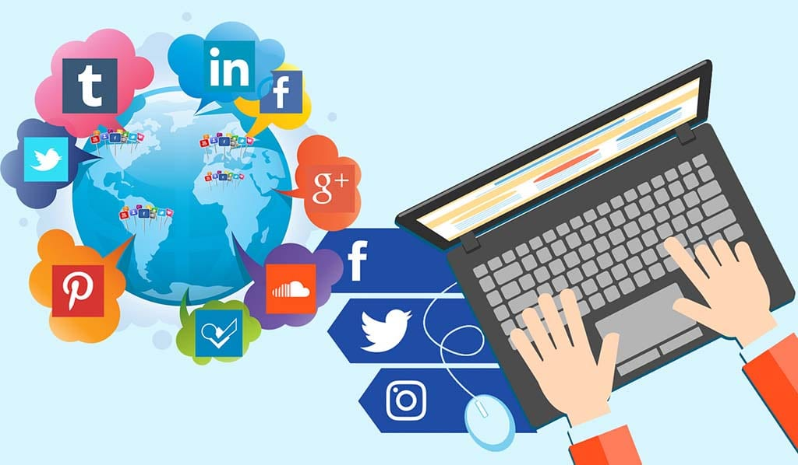

Diseño de páginas Web

Páginas Web efectivas para su Empresa ó Negocio con ambientes claros y fáciles de navegar para el usuario.
Nuestra principal prioridad y enfoque en el Desarrollo y Diseño de Páginas es el usuario final que va a buscar la información con una experiencia agradable y fácil de navegar. También nos enfocamos en La Marca de nuestro cliente. Cuidamos La Marca y potenciamos la Experiencia de Marca que ofrece nuestro cliente a su audiencia, ofrecemos ideas y soluciones que generan valor en ambientes digitales y que se alinean perfectamente con las acciones de publicidad y mercadeo que este desarrollando la empresa.
Diseño web alineado a la imagen de marca de su Empresa ó Negocio
Según su identidad y colores de marca
En Innova diseñamos propuestas alineadas a la imagen corporativa de nuestros clientes, con estilos modernos, ambientes fáciles de navegar y colores que refuerzan la imagen de marca de la empresa ó negocio. Nuestro diseño es dinámico, fresco, actual y está alineado a las tendencias de diseño web a nivel mundial.

Incluimos Paneles de: – Redes Sociales – Mapas
Integrados a la Página Web para facilitar la interacción con el usuario
Estos Paneles son esenciales para cualquier Página Web. Los Paneles de Redes Sociales ayudan a generar mayor interacción con los usuarios y para que estos encuentren fácilmente las últimas publicaciones que hacemos. Los Mapas de Google son clave para indicar donde está ubicada la empresa ó negocio, y facilitar la visita de clientes.

Diseño de páginas Web Móvil

Aumente el alcance de su Marca con una Página Web Móvil.
Las Páginas Web Móviles son en este momento una herramienta de mercadeo digital de primera necesidad. Con el rápido crecimiento en el uso de dispositivos móviles y el aumento en la conectividad de los usuarios a Internet, las Páginas Web Móviles se han convertido en un componente muy importante en la estrategia de mercadeo de cualquier empresa, pero en muy poco tiempo tener una estrategia de mercadeo móvil con Página Web Móvil, Aplicaciones y otras soluciones para dispositivos móviles será algo esencial para cualquier empresa que quiera mantenerse relevante en un entorno comercial cada veza más competitivo.
Los usuarios tienen acceso a planes de datos cada vez más baratos o a servicios de Internet Wi-Fi inalámbricos gratuitos en muchos lugares públicos, por lo que se hace indispensable tener una Página Web Móvil con información relevante de una marca o negocio para dispositivos móviles. Este tipo de página puede tener diferentes usos, puede servir por ejemplo para tener información básica de contacto de una empresa y un mapa, esto facilita que los usuarios conozcan la ubicación de la empresa rápidamente y puedan mirar el mapa si en ese mismo momento se están dirigiendo a ella y quieren usar su dispositivo móvil.
Páginas Web Móviles como parte de la Estrategia de Marketing Móvil
Para mejorar la interacción con los usuarios
Una de las ventajas de las Páginas Web Móviles es que son diseñadas específicamente para dispositivos móviles, con un diseño ágil, amigable y que se ajustada completamente al dispositivo, con información concreta, botones más visibles y con funcionalidades útiles para usuarios que están en movimiento, en un carro, en una sala de espera o caminado por la calle y que no tienen mucho tiempo para encontrar la información que necesitan. Las Páginas Web Móviles con Diseño Adaptable reorganizan la misma información que presentan en los computadores y la adaptan al dispositivo móvil, esto hace que las Páginas Web Móviles sean más cómodas y mucho más efectivas como parte de cualquier Estrategia Móvil.

Las Páginas Móviles deben tener:
- Páginas con dimensiones más pequeñas
- Información rápida y clara
- Formatos más simples para llenar fácilmente desde un móvil
- Compatibilidad con navegadores móviles y las distintas plataformas
- Imágenes optimizadas para descarga rápida
- Botón de llamada
- Mapa de ubicación y acceso

Una Estrategia de Marketing Móvil bien estructurada es muy importante porque los clientes están buscando cada vez más información a través de sus dispositivos móviles desde cualquier lugar de la ciudad, por esto una marca o negocio debe estar disponible con información relevante en el momento exacto en el que el cliente lo está necesitando. Sin importar el tipo de negocio, una Estrategia de Marketing Móvil con Geolocalización puede ser una gran ventaja competitiva y ayudar a los objetivos de mercadeo con un mejor Retorno de la Inversión a futuro.
Al pensar en una solución móvil, la clave está en analizar muy bien la situación, las necesidades del usuario y en cómo éste se beneficiará de las funcionalidades desde su dispositivo en el momento indicado. Por ejemplo, un negocio puede ofrecer descuentos, campañas promociones o regalos notificando a sus clientes sólo cuando se encuentran en el centro comercial o cerca del negocio, esto representaría información en el momento en que el cliente puede estar realmente interesado y podría responder positivamente a una activación de marca a través de su dispositivo móvil.
Redes Sociales
Actualmente, las redes sociales cuentan con más de 3800 millones de usuarios a nivel mundial
Para enero de 2017, estadísticas de We Are Social y Hootsuite exponían cuántos usuarios tiene Facebook en el mundo: 2167 millones de usuarios activos cada mes. Para enero de 2020 la cifra ascendía ya a 2440 millones.
Mediante la correcta planeación y ejecución de una Estrategia de Redes Sociales, logramos generar gran Interacción con los usuarios y mayor Difusión de la marca por su calidad en el servicio. La Inmediatez que ofrecen las Redes Sociales en la comunicación se traduce en Facilidad para el usuario y mayor Involucramiento, Empatía y Recordación de la marca. Las Estrategias en Redes Sociales se desarrollan principalmente para mejorar la interacción con el público objetivo, para ofrecer servicio post-venta a los clientes, para mantenerlos enterados sobre próximas promociones, actividades o eventos, para mejorar el posicionamiento en buscadores del sitio web de la empresa o de Micro Sitios que se desarrollen por campañas puntuales y aumentar así el tráfico de clientes potenciales.
Definición de Objetivos
Los Objetivos de la Estratégia de Redes Sociales son clave para implementar las Métricas asociadas
- Identidad de Marca
- Tono de Comunicación
- Audiencia por Canal
- Tipo de Interacción por Canal
- Involucramiento con la marca / Sentimiento Positivo
- Promoción del Producto ó Servicio
- Herramientas de pago y su Presupuesto
- Atención al Cliente
- Medición del Tráfico Web
- Conversiones
Al iniciar nuestros proyectos, en Innova realizamos un Análisis de la Situación para ofrecerle a nuestros clientes las mejores soluciones y una adecuada integración de Estrategias de Marketing Digital, de acuerdo al estado del negocio o a la etapa en la que se encuentre en el Ciclo de Vida del producto (Lanzamiento, Crecimiento o Sostenimiento).

Canales / Redes Sociales
Las principales Redes Sociales que utilizamos para desarrollar estrategias de posicionamiento son:

Facebook
La red social con mayor número de usuarios activos en el mundo
Gracias a las posibilidades de interacción con los usuarios, una Página comercial de Facebook es el complemento ideal para el sitio web de cualquier empresa. Una página de Facebook bien administrada puede ser un canal de comunicación de gran importancia para ofrecer un mejor servicio al cliente, con respuestas inmediatas, actualizaciones relevantes, información detallada de contacto de la empresa, mapa de ubicación, fotos del portafolio de productos y a través de otras aplicaciones que diseñamos, podemos mejorar sustancialmente la experiencia del usuario con la marca y la Empresa a través de Facebook.
A medida que crecemos en número de “Me Gusta” para la página comercial, la empresa aumenta en número de seguidores y puede comunicar información relevante a una mayor cantidad de usuarios. Para ésto utilizamos diferentes aplicaciones como Concursos, Anuncios y Pestañas que conectan la página comercial con canales de otras redes sociales, lo que permite apalancar la Estrategia en Redes Sociales, de tal manera que los usuarios puedan encontrar información más dinámica y tener diferentes opciones para ponerse en contacto con la Empresa y conocer sus productos.
Servicios que te ofrecemos
Transformacion Digital/Construccion de Marca
- Fanpage + Catalogo
- Creacion de Logo
- Imagen de portada
- Poster publicitario
- Pauta publicitaria
- Whatsapp Business
Manejo de Redes Sociales
- Contenido en RS compartido
- Poster publicitario
- Pautas publicitarias


Redes Sociales
Actualmente, las redes sociales cuentan con más de 3800 millones de usuarios a nivel mundial
Para enero de 2017, estadísticas de We Are Social y Hootsuite exponían cuántos usuarios tiene Facebook en el mundo: 2167 millones de usuarios activos cada mes. Para enero de 2020 la cifra ascendía ya a 2440 millones.
Mediante la correcta planeación y ejecución de una Estrategia de Redes Sociales, logramos generar gran Interacción con los usuarios y mayor Difusión de la marca por su calidad en el servicio. La Inmediatez que ofrecen las Redes Sociales en la comunicación se traduce en Facilidad para el usuario y mayor Involucramiento, Empatía y Recordación de la marca. Las Estrategias en Redes Sociales se desarrollan principalmente para mejorar la interacción con el público objetivo, para ofrecer servicio post-venta a los clientes, para mantenerlos enterados sobre próximas promociones, actividades o eventos, para mejorar el posicionamiento en buscadores del sitio web de la empresa o de Micro Sitios que se desarrollen por campañas puntuales y aumentar así el tráfico de clientes potenciales.
Definición de Objetivos
Los Objetivos de la Estratégia de Redes Sociales son clave para implementar las Métricas asociadas
Al iniciar nuestros proyectos, en Innova realizamos un Análisis de la Situación para ofrecerle a nuestros clientes las mejores soluciones y una adecuada integración de Estrategias de Marketing Digital, de acuerdo al estado del negocio o a la etapa en la que se encuentre en el Ciclo de Vida del producto (Lanzamiento, Crecimiento o Sostenimiento).
Canales / Redes Sociales
Las principales Redes Sociales que utilizamos para desarrollar estrategias de posicionamiento son:
Facebook
La red social con mayor número de usuarios activos en el mundo
Gracias a las posibilidades de interacción con los usuarios, una Página comercial de Facebook es el complemento ideal para el sitio web de cualquier empresa. Una página de Facebook bien administrada puede ser un canal de comunicación de gran importancia para ofrecer un mejor servicio al cliente, con respuestas inmediatas, actualizaciones relevantes, información detallada de contacto de la empresa, mapa de ubicación, fotos del portafolio de productos y a través de otras aplicaciones que diseñamos, podemos mejorar sustancialmente la experiencia del usuario con la marca y la Empresa a través de Facebook.
A medida que crecemos en número de “Me Gusta” para la página comercial, la empresa aumenta en número de seguidores y puede comunicar información relevante a una mayor cantidad de usuarios. Para ésto utilizamos diferentes aplicaciones como Concursos, Anuncios y Pestañas que conectan la página comercial con canales de otras redes sociales, lo que permite apalancar la Estrategia en Redes Sociales, de tal manera que los usuarios puedan encontrar información más dinámica y tener diferentes opciones para ponerse en contacto con la Empresa y conocer sus productos.
Servicios que te ofrecemos
Transformacion Digital/Construccion de Marca
Manejo de Redes Sociales